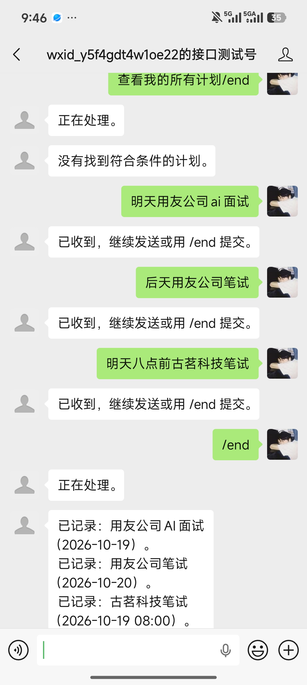
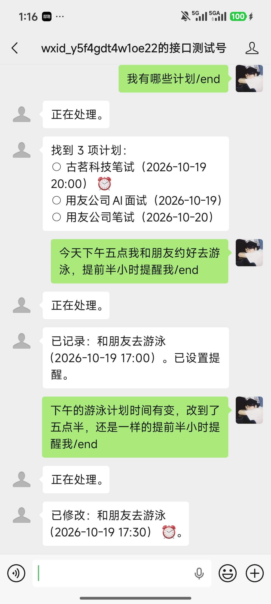
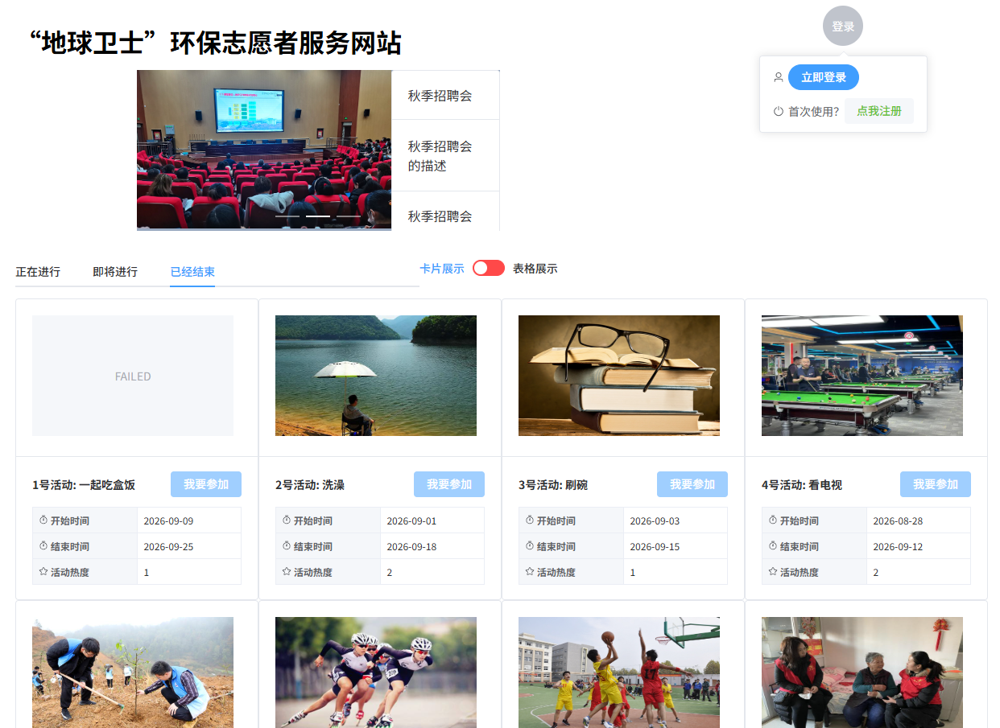
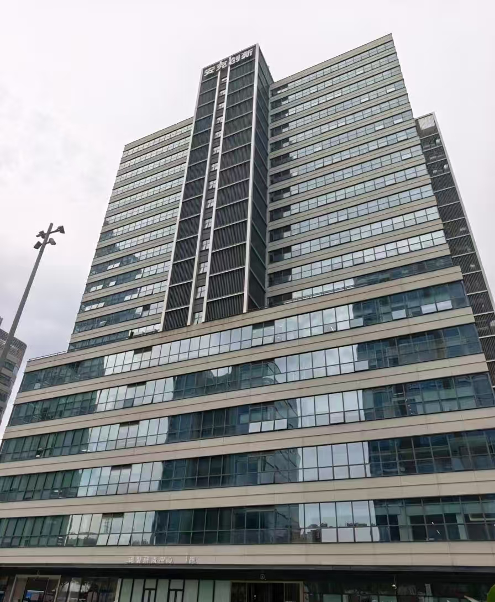
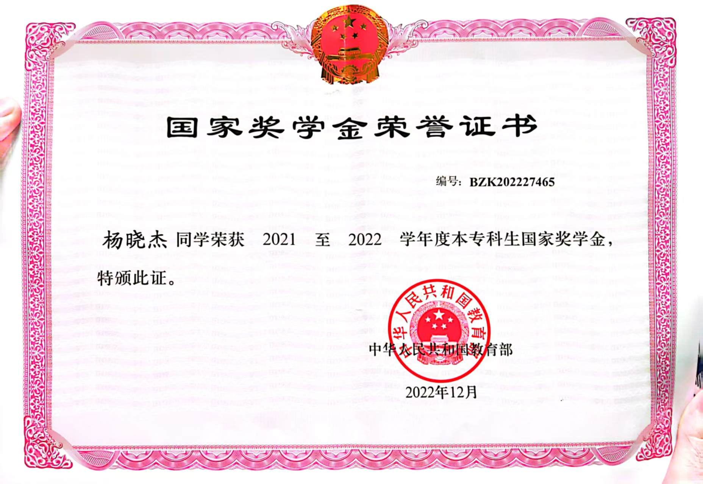
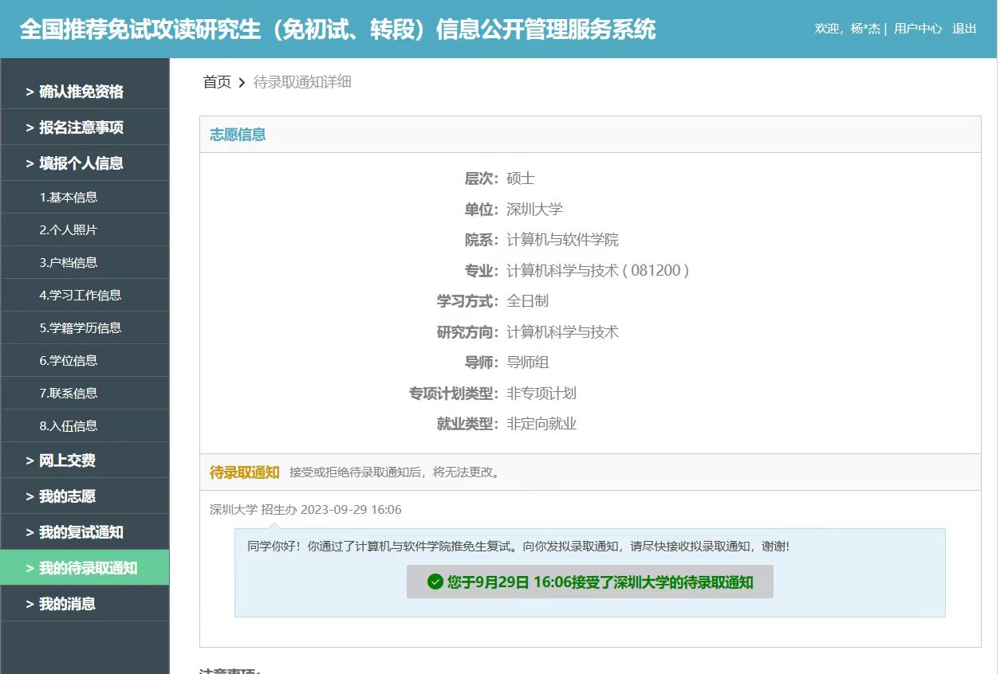
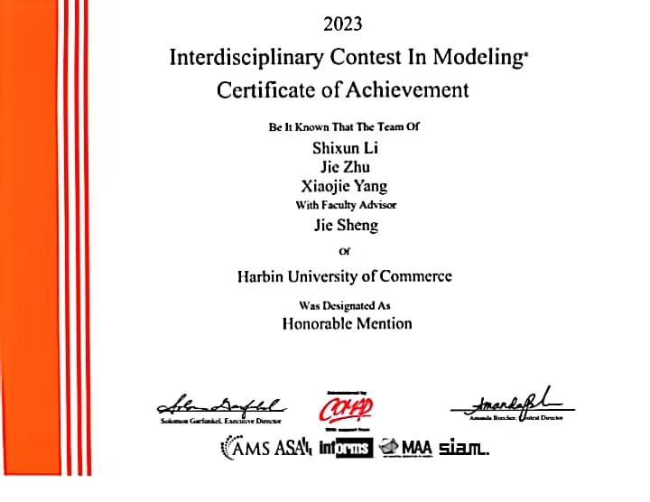
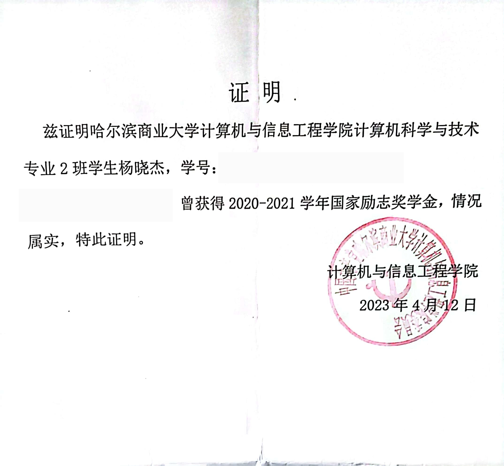
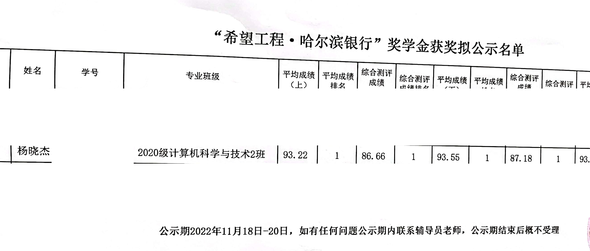

杨晓杰 Xiaojie Yang
深圳大学 · 计算机科学与技术硕士（在读）（2027.06毕业）
Technical Focus
- 软件开发C++；Java、Spring Boot、MyBatis、MySQL；Vue；Docker、Linux
- AI 应用智能文档解析；RAG；Agent（LangChain、LangGraph）
- 大模型原理与推理部署Transformer、LLM/VLM；vLLM、KV Cache、Tensor Parallel
- 多传感器与时序预测PPG/ACC 信号处理、CNN/RNN 时序建模
- 算法研究自动化算法设计、复杂网络优化、MoE、DQN、进化强化学习、多任务优化
Education
深圳大学
计算机与软件学院 · 计算机科学与技术 · 学术型硕士
GPA 3.62/4.0
哈尔滨商业大学
计算机与信息工程学院 · 计算机科学与技术 · 本科
专业排名 3/170
Projects


用户直接在微信中通过语义交互管理个人计划，无需下载额外 App 或学习复杂操作。
- 架构设计：以用户会话和消息批次双状态机驱动处理流程：① Java 接收并持久化微信回调；② 批次处理器异步消费消息、调用 Agent 并发送回复；③ Agent 解析语义、编排 Java 工具完成计划操作；④ 提醒任务扫描并发送到期提醒；⑤ 语音任务异步转写并回填原批次。
- 可靠性设计：通过消息去重、批次租约处理重复回调与 Worker 中断；缓存首次语义分析并记录写操作结果，使重试沿用原动作顺序、避免重复写库；持久化追问进度，对多候选修改进行目标澄清和版本校验；回复落库后发送并跟踪发送状态；关键数据与高风险操作由 Java 校验，不依赖 Agent 自行判断是否放行。

前后端分离的志愿服务平台，面向游客、志愿者和管理员，支持注册登录、活动浏览与报名、活动发布、等级权限控制、个人活动管理、活动审核、用户管理及官方活动管理。
- 前端：基于 Vue 3，使用 Vue Router 实现嵌套路由，Pinia 管理登录态，Axios 完成前后端交互，Element Plus 实现页面功能。
- 后端与鉴权：基于 Spring 开发接口，PageHelper 实现分页；通过 JWT 和拦截器完成身份认证，并使用 ThreadLocal 维护当前用户身份信息。
- 数据库设计：基于 MySQL 设计用户、活动、报名关系及官方活动等核心数据表；通过中间表建模用户与活动的多对多关系，使用 Trigger 自动维护用户等级、活动参与人数及初始状态，使用 Event Scheduler 根据活动日期定时更新活动状态。
金融问答 Agent
面向金融合规、反洗钱及监管处罚问答场景，构建融合可控工作流、LangChain Agent 与 RAG 的金融知识问答系统。
- Agent 架构：基于 LangGraph 编排“上下文准备 → Research Agent → 证据校验 → 合规闸门 → 回答或拒答”工作流；Research Agent 使用 LangChain 完成意图识别、澄清判断，并选择、循环调用中国金融法规库和反洗钱知识库等检索工具，将结构化证据交由后续节点校验。
- RAG 知识库创建与检索：使用 MinerU 将金融法规 PDF 转录为文本，按法规条款结构进行语义切分，提取生效日期等元数据，构建“Query 改写 → 多路召回”流程；通过低相关度拒答、禁用 HyDE 和法规依据校验，约束回答基于高相关条款生成。
- 记忆与可靠性：实现短期和长期记忆、工具异常重试与降级、ReAct 循环防护；开发 MCP 消息工具，打通 Agent 回答与微信公众号消息触达链路。
电商拼单支付平台
正在完善中。
Experience
东亚银行（中国）有限公司
战略及数字化办公室 · AI 应用工程师
开发从批量合同 PDF 解析、业务计算到邮件发送的自动化工具，并使用 MinerU 等构建金融法规 RAG 知识库。
相关技术：原生 PDF 解析、OCR、多模块 Pipeline、文档 VLM（MinerU-Diffusion、Unlimited OCR）、RAG；Transformer、ViT/NaViT；vLLM 推理部署（KV Cache、Tensor Parallel、PagedAttention、Continuous Batching）与性能测试（vLLM Metrics、vllm bench serve）。

安克创新科技股份有限公司
2023 实验室 · 深度学习算法工程师
基于 PPG、ACC 与金标心率开发运动心率预测模型（MAE 1.44 bpm），并通过自适应 PPG 通道选择将设备功耗降低 26%–46%。
相关技术：嵌入式数据解析、时间对齐、信号质量评估、滤波与 FFT 时频分析；CNN/RNN 多传感器融合建模；共享特征编码器、PPG 通道自适应选择。
Research
Multitask Node Combinatorial Optimization in Complex Networks via Mixture-of-Experts
作者 Xiaojie Yang, Zhijie Cao, Yeming Yang, Lingjie Li, Lijia Ma
状态 Accepted · IEEE CEC 2026
EvoRAG: Evolutionary Retrieval-Augmented Heuristic Generation for Node Combinatorial Optimization in Complex Networks
作者 Xiaojie Yang et al.
状态 Manuscript
Honors & Leadership

国家奖学金
2021—2022 学年本科生国家奖学金

推荐免试
2023 年获取推荐免试资格，2024 年入学

美国大学生数学建模竞赛（ICM）H 奖
2023 · Honorable Mention

国家励志奖学金
2020—2021 学年
2022—2023 学年

希望工程·哈尔滨银行奖学金
2022 年获奖公示名单节选